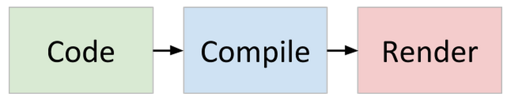
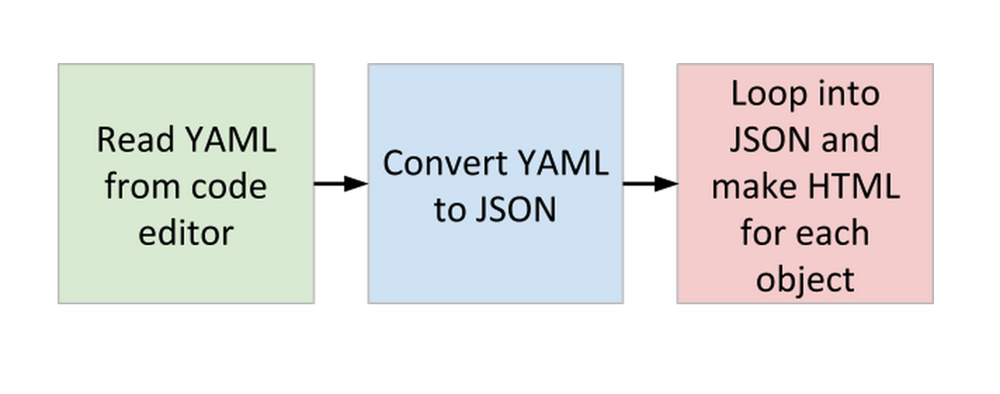
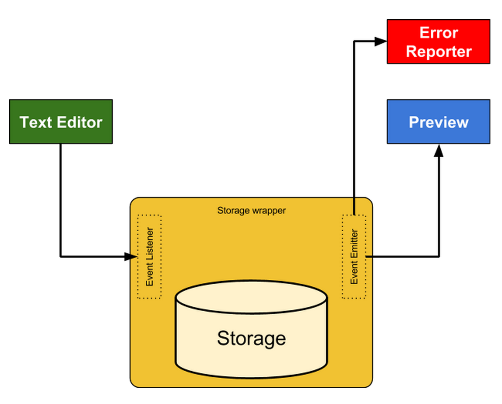
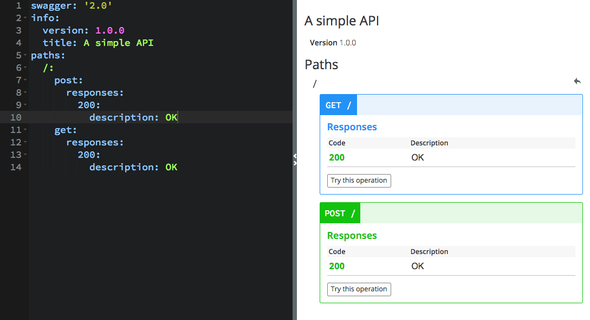
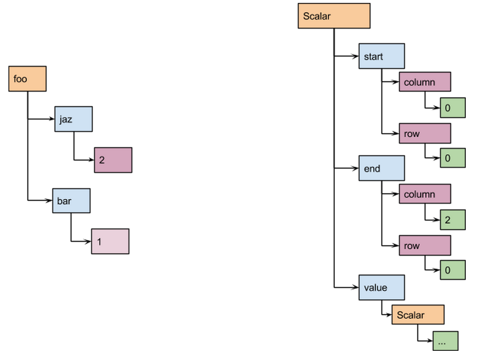
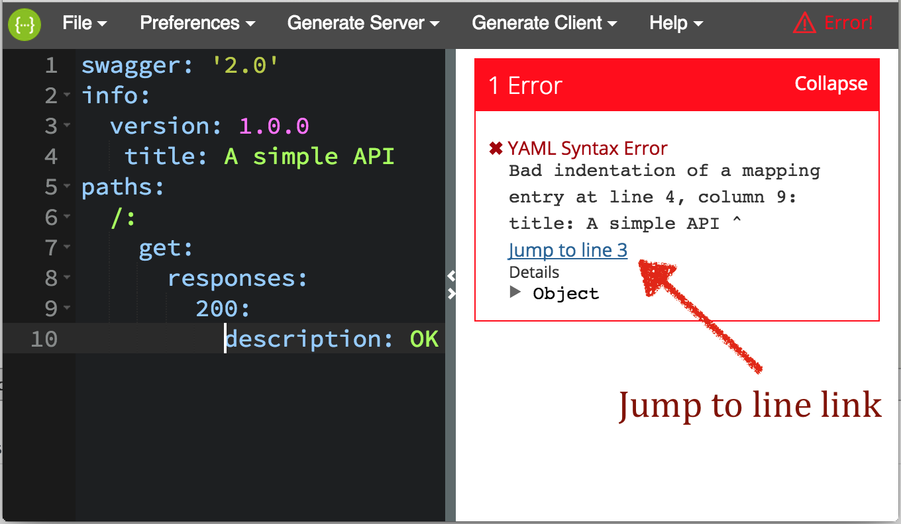
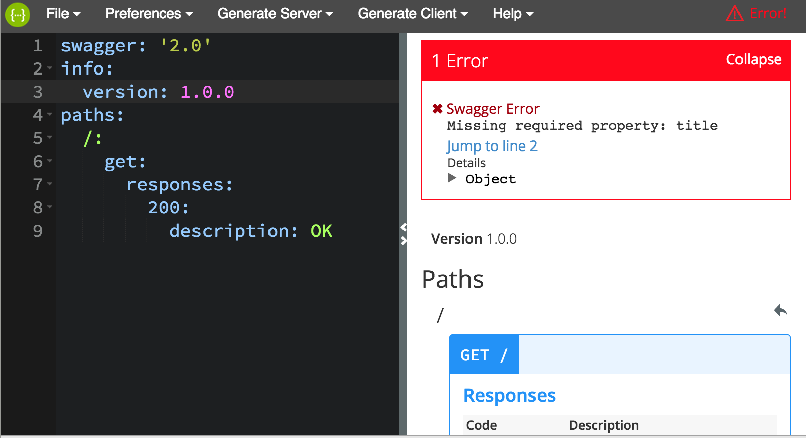
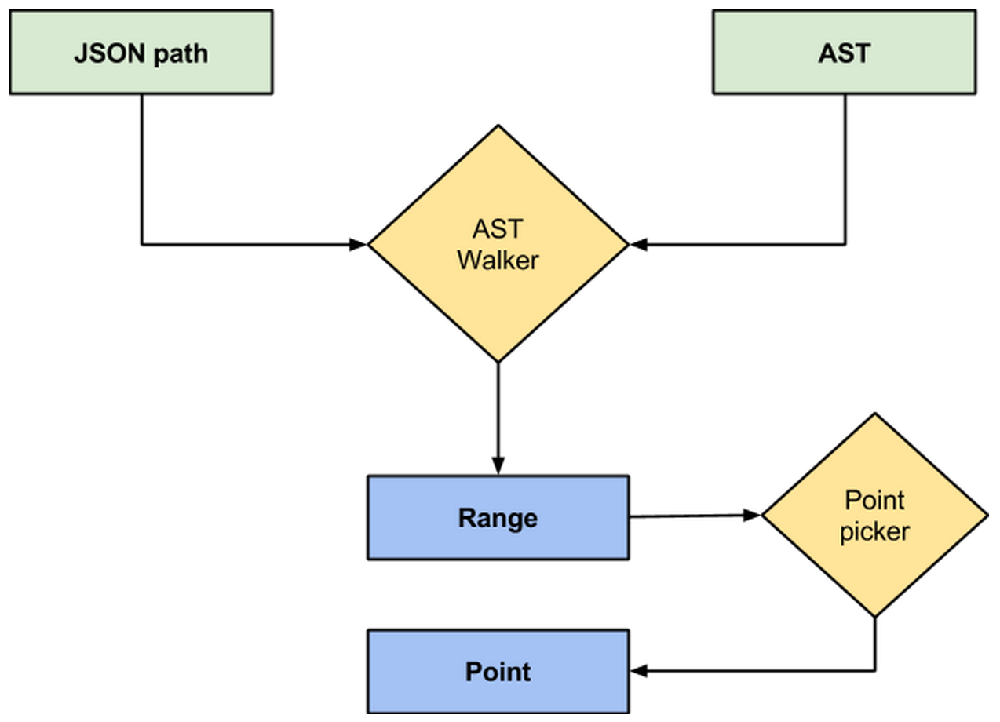

class: center, middle # My Experience in Building [Swagger Editor](http://editor.swagger.io) # Use arrow keys to navigate → --- # About Me <img width="100px" src="https://avatars2.githubusercontent.com/u/543633?v=3&s=460"> ### Mohsen Azimi #### Software Engineer @Apigee * Github: [`@mohsen1`](https://github.com/mohsen1) * Twitter: [`@mohsen____`](https://twitter.com/mohsen____) * Website: [`azimi.me`](http://azimi.me) --- class: center, middle # What is Swagger? ---  --- # Swagger API * #### API specification format --- # Swagger API * #### API specification format * #### Tools for generating documentation (Swagger UI) --- # Swagger API * #### API specification format * #### Tools for generating documentation (Swagger UI) * #### Tools for generating API spec from the code (Swagger Core) --- # Swagger API * #### API specification format * #### Tools for generating documentation (Swagger UI) * #### Tools for generating API spec from the code (Swagger Core) * #### Tools for consuming APIs in client side (SwaggerJS) --- # Swagger API * #### API specification format * #### Tools for generating documentation (Swagger UI) * #### Tools for generating API spec from the code (Swagger Core) * #### Tools for consuming APIs in client side (SwaggerJS) * #### Tools for generating server and client code from the specs --- # Swagger API * #### API specification format * #### Tools for generating documentation (Swagger UI) * #### Tools for generating API spec from the code (Swagger Core) * #### Tools for consuming APIs in client side (SwaggerJS) * #### Tools for generating server and client code from the specs * #### A lot of [community-driven projects](https://github.com/swagger-api/swagger-spec#additional-libraries) --- # Specs first or code first? --- # Specs first or code first? <div class="center"> <h1 style="font-size: 300px; margin: 0">Both!</h1> </div> --- class: center, middle # Show me the code --- # Swagger 1.2 [http://petstore.swagger.io/api/api-docs](http://petstore.swagger.io/api/api-docs) ```json apiVersion: "1.0.0", swaggerVersion: "1.2", apis: [ { path: "/pet", description: "Operations about pets" }, { path: "/user", description: "Operations about user" }, { path: "/store", description: "Operations about store" } ], authorizations: { .... ``` --- ##### <code>pet.json</code> ```json { "resourcePath": "/pet", "apis": [ { "path": "/pet/findByTags", "operations": [ { "method": "GET", "summary": "Finds Pets by tags", "responseMessages": [ { "code": 400, "message": "Invalid tag value" } ] } ] }, { "path": "/pet/{petId}", "operations": [ { "method": "PATCH", ... ``` --- class: center, middle # Swagger 2.0 --- # Swagger 2.0 * #### Single file for specification --- # Swagger 2.0 * #### Single file for specification * #### Tree view of the API --- # Swagger 2.0 * #### Single file for specification * #### Tree view of the API * #### More JSON Schema --- # Swagger 2.0 * #### Single file for specification * #### Tree view of the API * #### More JSON Schema * #### Introduction of JSON References --- # Swagger 2.0 * #### Single file for specification * #### Tree view of the API * #### More JSON Schema * #### Introduction of JSON References * #### Makrdown in descriptions --- # Swagger 2.0 * #### Single file for specification * #### Tree view of the API * #### More JSON Schema * #### Introduction of JSON References * #### Makrdown in descriptions * #### A JSON Hyper-Schema for validating Swagger 2.0 specs --- # Swagger 2.0 * #### Single file for specification * #### Tree view of the API * #### More JSON Schema * #### Introduction of JSON References * #### Makrdown in descriptions * #### A JSON Hyper-Schema for validating Swagger 2.0 specs * #### Fixes many issues raised by the community * #### YAML as first-class citizen --- class: center, middle # Show me the code --- #YAML for human ```yaml swagger: '2.0' info: version: 1.0.0 title: A simple API paths: /: get: responses: 200: description: OK ``` --- # JSON for machine ```json { "swagger": "2.0", "info": { "version": "1.0.0", "title": "A simple API" }, "paths": { "/": { "get": { "responses": { "200": { "description": "OK" } } } } } } ``` --- class: center, middle ### How should you make an API? <h1> </h1> --- class: center, middle ### How should you make ~~an API~~ <span style="color: red">anything</span>? <h1> </h1> --- class: center, middle ### How should you make ~~an API~~ <span style="color: red">anything</span>? <h1>Design it first!</h1> --- # Design First API Development --- # Design First API Development * ### Fast feedback loop --- # Design First API Development * ### Fast feedback loop * ### Well structured API --- # Design First API Development * ### Fast feedback loop * ### Well structured API * ### Collaborative development --- # Design First API Development * ### Fast feedback loop * ### Well structured API * ### Collaborative development * ### Well documented API --- # Design First API Development * ### Fast feedback loop * ### Well structured API * ### Collaborative development * ### Well documented API * ### Testable API --- class: center, middle ### Good design is only possible with good tools  --- # The case for an editor --- # The case for an editor * ### There was no tool for authoring Swagger specs with fast feedback loop --- # The case for an editor * ### There was no tool for authoring Swagger specs with fast feedback loop * ### Nobody have all the Swagger specs on top of their head to write an accurate specs * ### \* Not even [@webron](https://github.com/webron) or [@fehguy](https://github.com/fehguy) --- # The case for an editor * ### There was no tool for authoring Swagger specs with fast feedback loop * ### Nobody have all the Swagger specs on top of their head to write an accurate specs * * ### Other API specifications had authoring tools \* Not even [@webron](https://github.com/webron) or [@fehguy](https://github.com/fehguy) --- # Swagger Editor <table class="lean" cellspacing="0"> <tbody> <tr> <th>A tool to enable design-first API development</th> <th>Live documentations preview</th> </tr> <tr> <th>Semantic and Schema error reporter</th> <th>Syntactic error reporter</th> </tr> <tr> <th>Code storage (local storage or a backend)</th> <th>Import/Export Swagger specs in YAML and JSON</th> </tr> <tr> <th>Can be hooked to a backend</th> <th>Try operation</th> </tr> <tr> <th>Documentation/Code fold sync</th> <th>Code navigation</th> </tr> <tr> <th>Authentication support</th> <th>Tag navigation</th> </tr> </tbody> </table> --- class: center, middle # Starting the project and making choices --- class: center, middle <img height="400px" src="images/yeoman.png"> # Started with Yoeman --- class: center, middle <img src="images/pic_angular.jpg"> #AngularJS --- class: center, middle <img src="images/js.png" width="200"> # Pure JavaScript --- class: center, middle <img width="200" src="images/swagger.png"> #SwaggerUI for rendering (Initially) --- class: center, middle <img src="images/ace-logo.png"> #Ace for code editor --- class: center, middle <img height="200" src="images/grunt.png"> # Grunt for build tools --- class: center, middle <img src="images/jshint.png" width="300"> #JSHint --- class: center, middle <img src="images/jscs.png"> #JSCS --- class: center, middle <img height="200" src="images/github.png"> #Github for hosting the code and tracking issues --- # Editor workflow  --- # Editor workflow  --- class: center, middle # Easy! --- class: center, middle # Spec changes on every keypress --- class: center, middle # Spec can be invalid --- class: center, middle ## User wants to know if their spec is invalid --- class: center, middle ## User wants to see errors in the specs --- # Challenges * ### Render fast * ### Keep typing smooth * ### Report errors --- # Challenges * ### Render fast * ### Keep typing smooth * ### Report errors --- # Rendering Fast * ### Rendering is not fast! Specially if spec is large. --- # Rendering Fast * ### Rendering is not fast! Specially if spec is large. * ### Throttling the render task is reasonable. --- # Rendering Fast * ### Rendering is not fast! Specially if spec is large. * ### Throttling the render task is reasonable. * ### AngularJS do not re-render entire HTML when scope changes partially, don't override the scope on each keypress --- # Keeping typing experience smooth * ### Throttling rendering task helps not blocking the UI while typing --- # Keeping typing experience smooth * ### Throttling rendering task helps not blocking the UI while typing * ### Parsing YAML and walking the spec tree for validation is expensive, let's throttle those too --- class: center, middle ### A lot of tasks should run when user stops changing the spec (Error checking, rendering and saving) ### Each task can fail in it's own way --- class: center, middle # Pub-Sub #### Publish–subscribe pattern --- # Pub-Sub --- # Pub-Sub * ### Each task(component) can emit an error --- # Pub-Sub * ### Each task(component) can emit an error * ### Error reporter will show errors to user no matter which component they are coming from --- # Pub-Sub * ### Each task(component) can emit an error * ### Error reporter will show errors to user no matter which component they are coming from * ### One component keeps the state of all tasks success --- # Change listening and change listeners ```js Storage.addChangeListener('yaml', update); ``` ```js this.addChangeListener = function (key, fn) { if (angular.isFunction(fn)) { if (!changeListeners[key]) { changeListeners[key] = []; } changeListeners[key].push(fn); } }; ``` [see this in Github](https://github.com/swagger-api/swagger-editor/blob/master/app%2Fscripts%2Fservices%2Flocal-storage.js#L46-L53) ---  --- # Challenges revisited * ### Render fast <span style="color: green">✔</span> * ### Keep typing smooth <span style="color: green">✔</span> * ### Report errors <span style="color: green">✔</span> --- # A new problem  --- # A new problem ## JSON does not care about property <b>order</b>, therefore Swagger operation and responses may lose their order during YAML→JSON conversion --- class: center, middle # We need to sort object properties based on their position in YAML --- # Some processors sort keys alphabetically ```yml foo: jaz: 2 bar: 1 ``` ```json { "foo": { "bar": 1, "jaz": 2 } } ``` --- ### To sort properties based on their position in the YAML we need an abstract syntax tree (AST) of the YAML --- #### What is an AST?  --- ```yml foo: jaz: 2 bar: 1 ``` ```yaml value: value: "foo" start_mark: line: 0 column: 0 end_mark: line: 0 column: 3 value: value: "jaz" start_mark: line: 1 column: 2 end_mark: line: 1 column: 5 value: "2" start_mark: line: 1 column: 7 end_mark: .... ``` --- ### Using an array instead of objects to keep the order ```yaml /: get: ... post: ... ``` ```js { "post": { /* ... */ }, "get": { /* ... */ } } ``` ```js { "operations": [ { "operationsName": "get", /* ... */ }, { "operationsName": "post", /* ... */ } ] } ``` --- # AST can do much more * ### Points to exactly where an error occurred (Jump to line) --- # AST can do much more * ### Points to exactly where an error occurred (Jump to line) * ### Points to exactly where a path, operation or parameter is located in code (Jump to YAML) --- # AST can do much more * ### Points to exactly where an error occurred (Jump to line) * ### Points to exactly where a path, operation or parameter is located in code (Jump to YAML) * ### Brings into the view the operation that is being edited currently --- ## Jump to line link when there is a YAML syntax error  --- # From YAML syntax error to line number YAML syntax error gives back the line number and column number ```json problem_mark: buffer: "swagger: '2.0'↵info:↵ version: 1.0.0↵ title: '..." column: 8 line: 3 pointer: 46 ``` --- class: center, middle # Easy! --- # Jump to line link when there is an error in Swagger spec  --- # Swagger errors are JSON Schema errors ### JSON Schema errors have: #### Line number in JSON #### JSON path to error --- class: center, middle # Line number in JSON is useless! --- ### Getting the line number from a JSON path  --- # AST walker * ### In-order tree walking --- # AST walker * ### In-order tree walking * ### Very cheap operation --- # AST walker * ### In-order tree walking * ### Very cheap operation * ### We need to update the AST when spec changes --- # Jumpt to YAML --- class: center, middle # Questions?